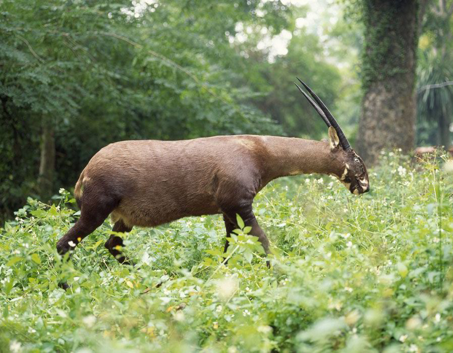
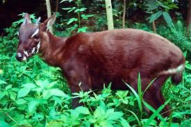
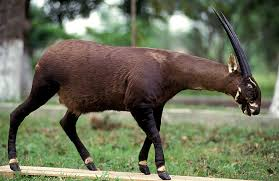
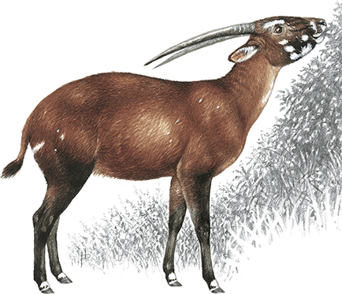
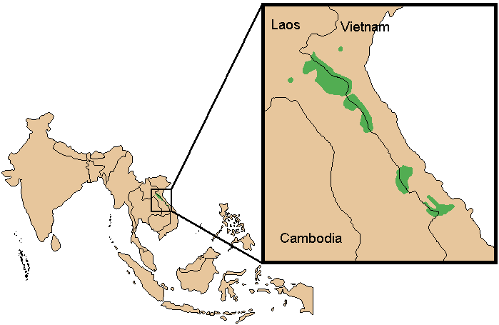

The History of the Saola
The saola is also referred to as the Asian Unicorn, and was only recently discovered in May of 1922. The Saola was discovered in north-central Vietnam. This animal is non-existent in captivity, and this mammal is very close to becoming extinct.
Physical Appearance
The Saola are recognized by two long parallel horns with sharp ends. These horns are found in both males and females. Saola have white marks on their faces and large maxillary glands on their muzzles. These are used to mark territory and attract mates. They have a dark brown coat, but it is lighter on the neck and the undersides. Also there is a white band around the rump, and this continues onto the tail. The typical weight for these animals is about 175 to 220 pounds. We can protect these animals by spreading an awareness of how many there are left in the world, and informing others of the dangers of extinction.
   Conservation
The ICUN status is Red List or critically endangered. The threats to these animals include hunting, habitat loss, and fragmentation. The only countries that these animals are found is Laos and Vietnam, and specifically on the border of these two countries in the Annamite Mountains.
